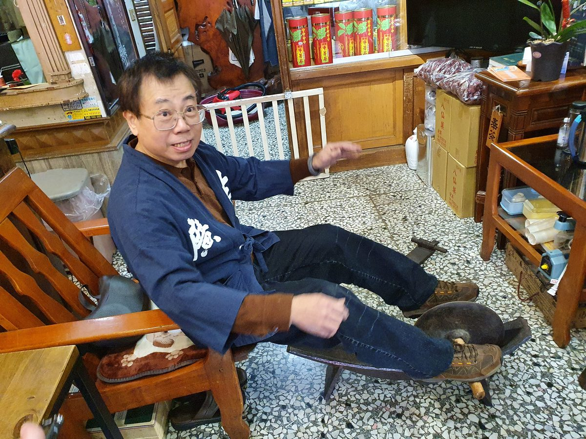
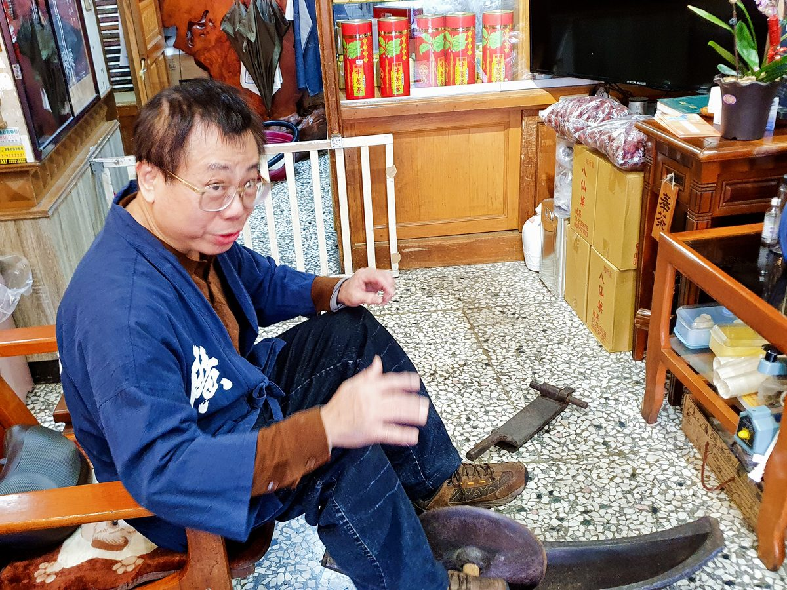

⭐中藥行尋寶──健身輾藥兩相宜：藥船⭐

千苦萬痛都得渡，請病乘上藥船去
海上行船，湖上泛舟，你可知中藥行裡也有著渡人出苦海的一條船嗎？這艘解古今千萬人病痛的就是「藥船」，又稱「藥輾」、「輾藥槽」、「藥舟」。
其整體分為半弧狀鐵製基座，前後翹起，中有一凹槽，其中放置一鐵輪，鐵輪中穿過一根木軸，使用時將要磨製的藥材放入凹槽，磨藥者將兩腳放置於木軸上，不斷來回滾動把藥材碾碎成粉末。藥船用時，磨藥者會坐於椅上，但更多講究之人，會雙手抓住門楣或自製單槓，將身體懸空來回研磨藥材，運用體重下壓將之輾得更細，堪稱居家健身的必備項目。
藥船由來──華陀與鐵匠
而藥船的由來又託給了華陀大大，約莫是只要跟中醫藥有關，只要給了他老人家掛名，能力值可直逼傳說廚具吧！這次華佗哥治療的是位先小人心、後君子腹的鐵匠。
話說有天華陀到處下鄉探訪時，隨手醫治了某位生病的鐵匠，他大哥還定期帶藥看望這位鐵匠，也都沒收錢。我們的鐵匠哥，覺得一定有鬼，不知華陀想在他這得甚麼好處，便一次次記下華陀送來的藥材，手把手賺了錢，暗自湊齊了藥錢，即上門想一次結清餘款，省得欠人債，擔心受怕，說不定鐵匠哥還在背後先安個把鐵鍬，想說若華陀獅子大開口，還可嚇嚇他。
沒想到華佗大大一見他入門，滿臉問號地說了：「你……哪位，叫號叫到你了嗎？沒看見這邊都在排隊？」鐵匠慌張地左手拿出錢袋，右手伸向背後緊握鐵鍬便說：「先生，之前你醫治過我，還帶了許多藥來，你忘了嗎？我今日是來送上藥錢的，你先前都忘了跟我拿。」
華陀聽完便笑道：「哈哈哈，不用啦，再說我根本不記得我拿了甚麼藥，更何況有人生病可以讓我實驗療法才重要阿，你康復了嗎，甚好甚好。」鐵匠聽完，大受感動，原來華陀只是把他當白老鼠試驗，並沒有要收他錢，是個光明正大的研究人員來著。
他放下手中鐵鍬，正想好好道謝，卻看見華陀門人辛苦地將藥材用盡各種方法搗碎，效率極差，下定決心要送個禮給大大，砰一聲，人就消失了。過了幾日，鐵匠跟他徒弟，扛來一座「藥船」致贈給華陀大大，讓藥材可更快更好地碾碎。
這艘渡人病痛的藥船，就在白老鼠實驗的成功下，成為副產品誕生出來，搖身一變成為了中藥行中最出名的健身，歐不，是輾藥利器。
滾動的光輝歲月與藥師記憶
當然傳說就是傳說，不免像我這樣加油添醋，但醫者費盡全力輾製出來的藥帖，卻是貨真價實，醫身護心。時至今日，機械化的現代，許多輾藥的工作，轉移到了自動化的機器手上，但在老闆我探詢的百年藥行中，仍看得見這船悠悠地，躺在某個角落，銹蝕的色澤與厚實的重量，仍散發著許多藥師汗水與病者記憶的光暈。
下次若你走訪藥行，看見這艘航行在藥香與光陰中的船，記得多看幾眼，說不定還能聽見它來回滾動的光輝過去。
#快跟老闆我還有剪溜一同嗅嗅那百年藥香
#百年藥櫃九帖湯各大平台書局熱銷中
博客來：
讀冊：
金石堂：
附圖感謝廣生藥房 天安堂提供
